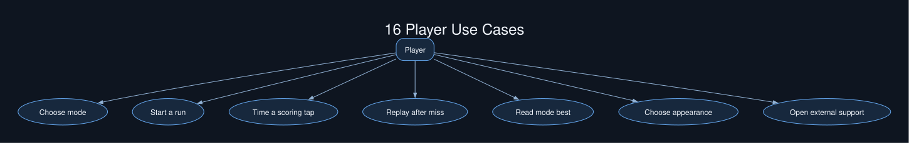

SVG review projection of the native Plus-C model. Open the .plc file for its editable notation and layout.
Native Plus-C file
Plus-C systems library
SVG review projection of the native Plus-C model. Open the .plc file for its editable notation and layout.
Native Plus-C file